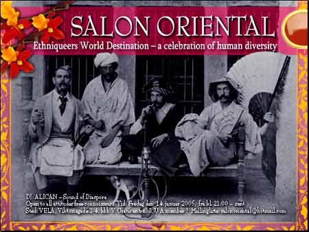

| dunst recommends this event | Fredag 14. Januar 2005 |
 |
|
| SALON ORIENTAL Er et arrangement specielt møntet på etniske homo'er i Danmark. Arrangeres af LBL's gruppe for etniske homo'er. Open to all attitudes free connoisseurs. DJ: Alican - Sound of Diaspora. Tid: kl. 21:00 - sent Sted: VELA, Viktoriagade 2-4, Kbh V. Entré: Gratis. Mailingliste: salonoriental@hotmail.com - R U A member? |
|
| Tilbage |